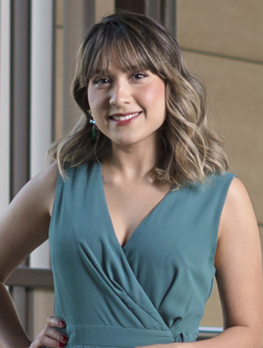
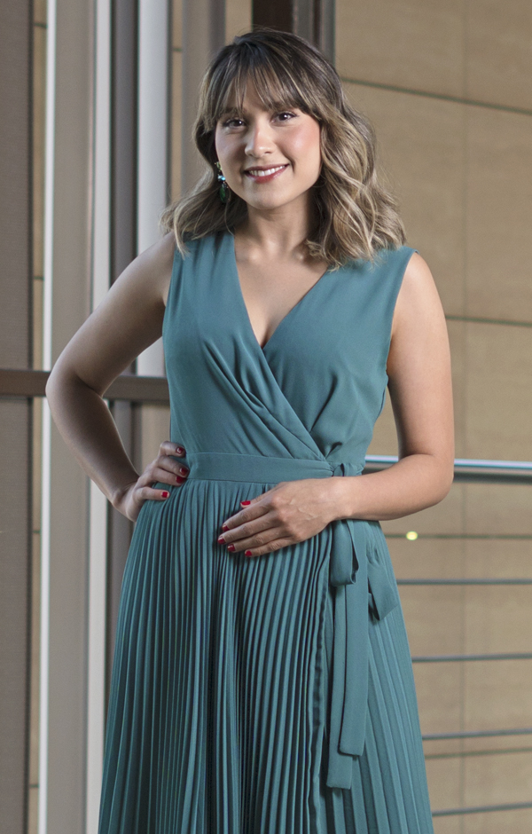

Odont. Dulce Karina
Montijo Flores

Atención temprana y de calidad
Revista BS charló con la odontóloga Dulce Karina Montijo Flores sobre puntos clave de la odontología para la salud integral. A continuación sus comentarios
Redacción BS
edicionrevistabs@gmail.com

¿Cuál es la importancia de la valoración y atención oportuna en odontología?
“Sin duda, una evaluación temprana siempre será importante para prevenir las enfermedades bucales más comunes como la enfermedad periodontal y la caries. Es por ello importante inculcar la prevención desde una edad muy temprana y de esta forma crear conciencia del papel fundamental que tiene nuestra salud bucal en nuestra salud en general”.¿Cuál es la relación entre salud y estética dental?
“La estética dental y la salud dental son dos conceptos complementarios, nosotros cuando acudimos al odontólogo a realizarnos un tratamiento estético estamos mejorando nuestra salud dental y, por lo tanto, nuestra salud en general. La Organización Mundial de la Salud señala que 'la salud es un estado de completo bienestar físico, mental y social, no solamente la ausencia de afecciones o enfermedades', es importante destacar que la estética dental parte de un buen mantenimiento de la salud bucodental”.¿Algún avance o innovación reciente en su campo que pudiera destacar?
“En mi consulta me encuentro relacionada con lo que es el DSD, Digital Smile Design por sus siglas en inglés, es una herramienta que permite el diseño y planificación de manera digital de la estética ideal del paciente, con su ayuda mejoramos la comunicación y los objetivos deseados por el paciente y mejora la planificación del caso con el laboratorio, aumentando la previsibilidad y resultados del tratamiento.”De acuerdo con su experiencia ¿cuál es la periodicidad ideal para visitar al odontólogo?
“Lo ideal es visitar a su odontólogo de cabecera cada 6 meses, para realizar una limpieza general y valorar que los órganos dentarios y tratamientos restaurativos (en caso de presentarlos) se encuentren en buen estado, además detectar alguna enfermedad a tiempo y, mejor aún, poder evitarla. En pacientes inmunosuprimidos o con enfermedades crónicodegenerativas les recomendaría acudir cada 3 a 4 meses para un mayor control de su salud bucodental”.¿Algún mensaje o recomendación adicional que quiera enviar a los lectores?
“Sí, es muy común que lleguen mis pacientes a la consulta y me expresen el miedo que sienten de ir al dentista, ya que aún existe esa percepción por parte de las personas que todo lo que realizamos genera dolor, algo que no es así. Me gustaría decirles a todas las personas que aún se sienten con ese temor que dar ese primer paso es importante para mejorar su salud bucal y, por lo tanto, su calidad de vida”.